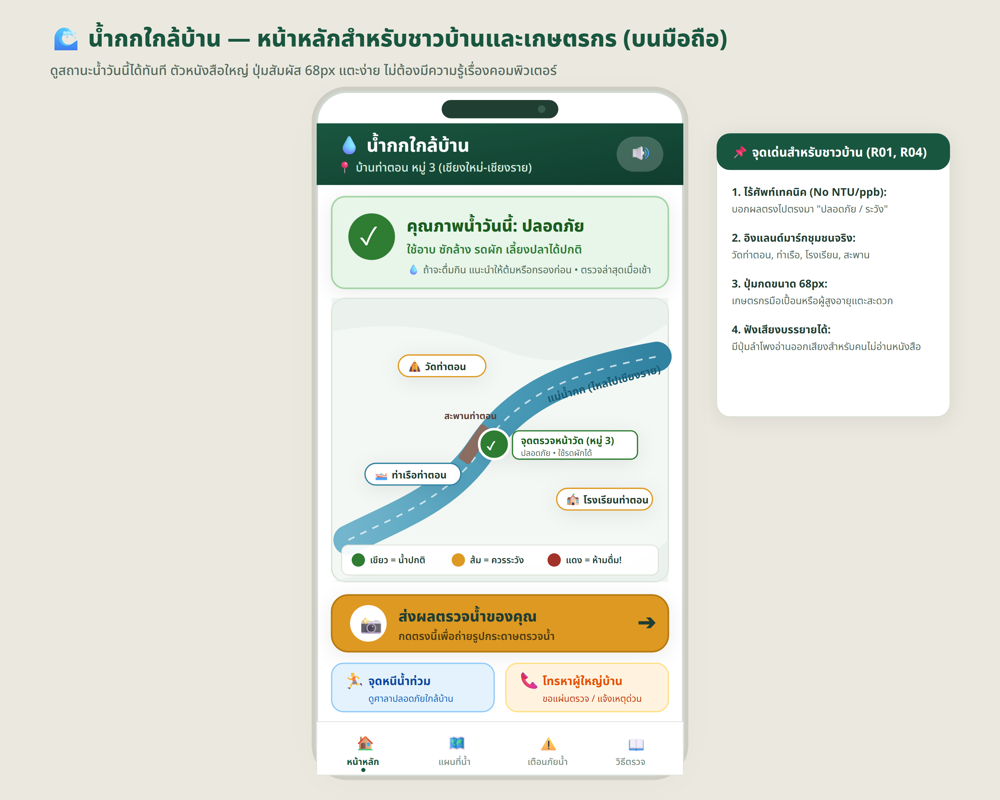

หน้า 01: แผนที่น้ำกกใกล้บ้าน — หน้าหลักสำหรับชาวบ้านและเกษตรกร
จำลองหน้าจอมือถือจริง ปุ่มสัมผัส 68px ไร้ศัพท์เทคนิค บอกสถานะ "ปลอดภัย" ทันที

ระบบตรวจคุณภาพน้ำและอุทกภัยสำหรับเกษตรกร
✓ Production สำหรับชาวบ้านจำลองหน้าจอมือถือจริง ปุ่มสัมผัส 68px ไร้ศัพท์เทคนิค บอกสถานะ "ปลอดภัย" ทันที
